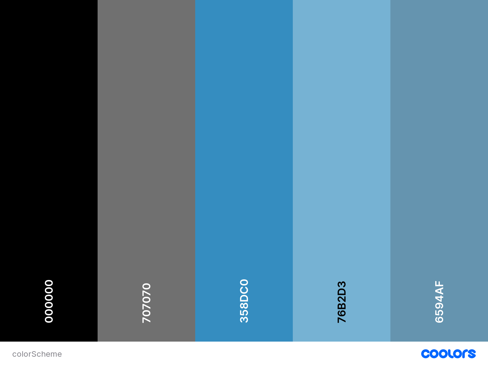

The color scheme was generated based off of the colors from the site logo. I feel that it is very important for all of the colors across the whole website to look good together in order to make using the website a better experience. Here is a link to my color scheme.
